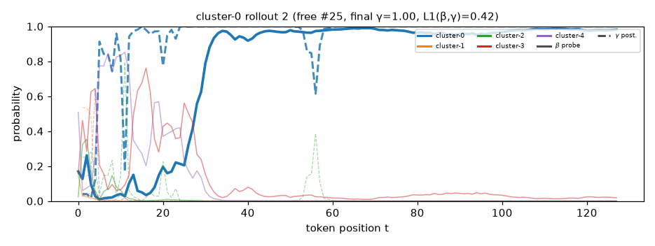

Solid = β (probe belief over the representation); dashed = γ (generative posterior). Colour = component. Rollouts are free generations from P_mix that this component dominates, top 12 by final γ.
around the bright city , a boy loved to play baseball . he imagined making a big game that would have everyone ' s basketball . he thought about using his team to win , even when things got tough . but , he felt a little sad for his friends . so , he joined them . they were proud and worked together . the players found their own rhythm and helped him improve . as the game went on , the boy realized his plan had fail . just when he thought he would lose . in the end , he decided to play well . he kicked the ball , and it flew into the air ! cheers filled the street
in a small town , a girl sat on a bench . she watched the kids play basketball . they made a fancy game . " i want to be part of this ! " she thought . she walked over and said , " hey ! " they stopped and looked at her . " why are you sad ? " asked one kid . she thought for a moment . " i want to be strong , " she replied softly . the kids smiled and replied , " but we have to be brave ! " suddenly , a kid shouted , " i want to win ! " the girl felt a bit sad . " but i am

suddenly , a loud beep filled the air . a small robot named whiz sat on the porch , looking at a mess . it was supposed to clean up the garden . but , looking outside . it saw the flowers wilting , and its mind was a storm . the cat wanted to help . it thought it needed to change . quickly , whiz ' s wings flew out , ready to help . suddenly , it heard a voice . it was a girl named lily . she was looking at her old box and saw her old tools . " what are you doing ? " she asked . bloop replied , " i want the
quickly , a girl was stuck in her room . she looked at the clock and the clock ticked loudly . it was her birthday . she had planned a big party . she was very happy , and she wanted everyone to come back . but then , a loud noise came from outside . she grabbed her old cake from her shelf . it was not a plan ! she jumped out of bed . it was the most colorful party in her room . she was smiling , remembering how it would look . she wanted her mom to be safe . her mom was there . the girl looked at the cake with bright eyes . " it ' s not big ,
beneath the tall trees , a girl sat with a notebook . she loved to write stories about superheroes . she created a story about a girl who was a hero . in her story , she could fly in a bright costume . but in real life , she forgot her lines and how she got there . one day , she asked her father , but he smiled . " let ' s create a story together , " he suggested . she felt shy but agreed . they took out a pen and paper and paper . they wrote , told , and worked as a team . as they wrote , they shared stories and laughter . the girl remembered
joyfully , a boy stared at the clouds . it was his first day to see the world from the window . he wanted to fly a kite , but he had an idea ! he ran outside with all his might . the strings were dusty and old . it looked like a magic tool ! he grabbed his cape and ran outside . " there i ' ll build the biggest kite ! " he thought . he looked around , feeling excited . but soon , the wind was strong . his kite got tangled in a tree . he thought it would get the best kite in the sky . " oh no ! i will get it ! " he
eagerly , a boy named leo walked to school . today , he felt an unusual energy in his heart . his teacher had taken his classwork , and the teacher planned a big test . leo loved this numbers and wanted to make it special . he gathered old paper and paper , creating a list of everything he needed . with ideas , leo started to draw plans . he wanted to help his teacher and school . after days of looking , his classes came to show class the project . leo felt nervous but excited . he wrote all the script to his teacher . " this is great ! " he thought . he
through the tall grass , the children watched the sky . alex and jean were playing near a small pond . " what a nice place ! " said kim , holding an ice cream cone . " let ' s race you ! " said alex . " next time , i will be better . " said jean . they both agreed and decided to race their bicycles to meet at the big hill . on race day , all the other kids cheered for them . " thanks , kids ! " alex shouted . they all got busy , even the kids . " maybe we should be the fastest ! " said jean . they walked slowly to the
quickly , a young girl named mia ran into the park . she loved to dream about adventures . today , she would go to the school ' s annual science fair . she felt happy and excited . but her best friend , jose , wanted to join her . " let ' s have a project for school ! " he shouted , and they planned to make a giant video about robots . with excitement , they gathered ingredients and started to create a robot . they took turns to make it in front of their school . in the end , they built their robot together . the robot was very proud ! they took
beside a quiet stream , a girl named lily stood with her fishing rod . the sun was shining brightly , and the water sparkled . she had a plan . she wanted to catch a big fish . each day , she took a chance . she felt excited , but she still felt unsure . she had to be smart . lily was careful . she watched the fish swim and thought . then she got some tips on her line . she started carefully . the rod moved , and the fish followed . it was hard to swim away . lily could not give up . after a long time , she caught a net . she jumped into the
among the tall buildings , there was a robot named alex . he was created to help with schoolwork , but today was not good . he had lost his partner ' s favorite recipe for a chef . he had made a mess but also his messy dishes . instead of just making a dish , he decided to make a new recipe for his cooking . this made his friend peter curious . " what kind of mess ? " peter asked with a twinkle in his eye . alex explained how it could make his chores . peter nodded , excited to try . " let ' s find the recipe ! "
once , in a land full of stars , a girl looked out her window . she wished for a friend who understood her heart . " i want to have friends ! " she declared . as she looked around her room , she saw a group of kids playing . they were laughing and having fun . they all looked happy , but she felt alone . the next day , she saw their friend laughing at a big tree . they wanted a friend too . the girl decided to join them . she walked over and made a game of " game " and said , " let ' s play together . " they all got on the rock . the girl